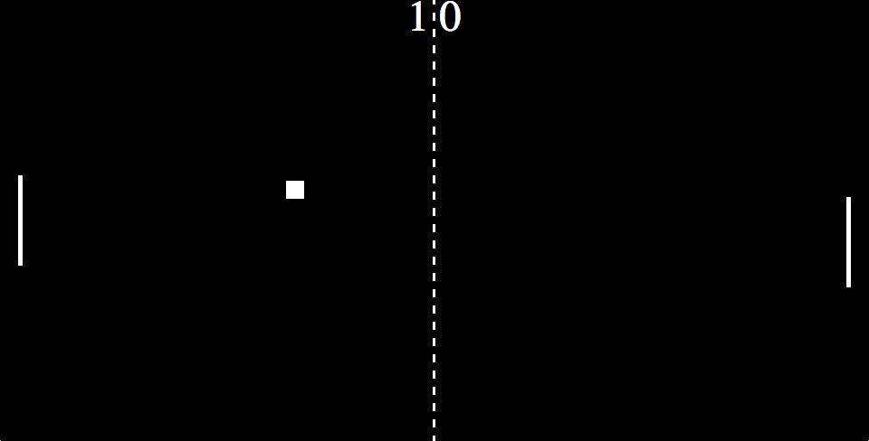

Dan Hems Software Engineer
A little about me
I'm a Software Engineer specialising in developing web applications with JavaScript.
My primary focus is working on application logic and improving my knowledge of software design principals.
Historically, I built static websites as part of my employment, and these were primarily agency-based projects that were designed for marketing purposes. After a time I grew tired of this work and started to play around with some concepts for game development as this is where my passion in engineering lay.
At the time of writing this (Feb 2024) I am actively developing Puzzly, my jigsaw puzzle project.
Projects
-
Puzzly / Eliza's Jigsaws
Tech: HTML5, CSS, JavaScript, Canvas, SVG Paths, NodeJS, ExpressJS, MongoDB, WebdriverIO.
This is a jigsaw puzzle application I am actively developing.
It draws inspiration from applications like Just Jigsaws that can be found on the Play Store. It allows the user to upload a picture and generate a jigsaw puzzle from it that they can then solve.This is my primary focus and very close to my heart as it was a request from my Wife: She wanted a puzzle-solving experience without the ads and limitations of the products currently available on the Play Store.
I began work on this six years ago (including a lengthy hiatus, during which time I almost forgot about it), and I've had to go through a few architectural changes during development when it became apparent that I had made a mistake, or I was pursuing a path that wasn't viable for what I was trying to achieve.
I feel that this is the project that defines me at this stage in my career: This project is about engineering a unique experience for the user, and tackling the logical and behavioural requirements it demands. It has given me the opportunity to try new ideas, apply best-practices, learn to solve problems and work with technologies I don't get to play with in my employment. It has also given me good experience of working on the full stack of application development.
At present this project lives only on my machine's local server: I want to get it hosted somewhere so that it can be used by others, but I haven't yet found a free solution for this. Ideally, I'd like to make the backend serverless, and this would make for yet-another opportunity to learn a new skill and gain some new experience.
Dynamic puzzle generation
One of the core drives behind this project is that I'm generating an entirely unique puzzle every time one is created. This means that the pieces that comprise the puzzle are always in a unique configuration in terms of their plug and socket connectors. This will be more noticeable when I implement 'natural' and 'wild' shape types (a feature I plan to work on very soon).
Canvas and SVG
I'm rendering the puzzle pieces using Canvas and SVG paths. The image the user provides is scanned from top to bottom, left to right, and divided into squares and rectangles (depending on the connectors the piece has). This information is then used to generate a PNG sprite by calling the Canvas' drawImage and clip methods. These methods are given the coordinates for each piece's rectangle and clip them to an SVG path, and this produces the jigsaw shape.
Integration testing
In the last week or so (Feb 2024), I've finally started writing integration tests.
This is something I've been wanting to do for months but I had to make sure it was stable enough for the tests to be useful. Having just finished the latest architectural change (implementing classes for the 'movable' elements in the puzzle i.e. pieces, groups of connected pieces, non-connected pieces selected by drag-and-select, and pieces picked up from the pockets), I finally felt confident to begin integration testing.At first I tried setting up PlaywrightJS as I've been using this in my current employment and I'm fairly familiar with it, but I found that it doesn't handle file uploads very well. After failing to get this to work, I read about WebdriverIO and decided to give that a go instead. Where PlaywrightJS refused to let me upload an image after days of arguing, WebdriverIO let me do this with little resistance, so I kept with this framework instead and set about learning how WDIO does testing. I am now working on building out the helper functions my tests will need in order for me to write scenarios that will drag this piece near that piece, connect them or don't connect them, drag and drop this piece out-of-bounds etc.
Future plans
New features
As I said above, I intend to generate more natural looking jigsaw piece shapes, and eventually 'wild' shapes which can have at least three sides (not limited to only four sides), and puzzles which do not conform to a grid of equal rows and columns. I also intend to support very large puzzles (thousands or tens of thousands of pieces) which could be solved in smaller sections.
User accounts
A critical feature this application will need in order to be considered 'live' is support for user accounts. While my Wife wil always be the 'original' user, I have always worked on this with other users in mind. Funnily enough, the first person other than myself to use this has actually been my ten-year-old niece. She likes solving jigsaw puzzles, too, and often when we babysit her she likes to go on my machine and have a play with Puzzly. Half of the time it is broken for some reason or another, or I'm in the middle of fixing something and she'll just take over my machine and start dragging pieces around, or typing in some silliness in my editor. She is the first true QA tester for this project, and she is quite proud of that.
Port to Kotlin
I am planning to eventually have an Android version of this application, though this will mean learning Kotlin first / along the way. This is something I am very interested in doing as it would provide a better experience for the user, and it would be exciting for me to learn a new (and strongly-typed) language, and it would be a breath of fresh air to develop in a non-web-browser environment. -
Pong
This is my own rendition of the classic game, built with JS and the DOM. I wanted to try something new and challenging, and found inspiration from some live-coding talks I watched online, so I decided to give this a shot.
View project (links to Codepen)
The game uses JS only (no frameworks or libraries) for ball and paddle movement, and collision detection.
Legacy
These are projects I've worked on in the past, mostly for previous employers. These are all ancient and, unsurprisingly, appear to have long-since been taken offline or moved. These projects only really serve to illustrate my earlier career.
-
The F1 Connectivity Innovation Prize

Website for The Formula 1 Connectivity Innovation Prize, a competition currently being run by Tata Communications, the official connectivity provider for Formula 1. The competition calls on members of the public to find new and innovative ways of presenting Tata's essential race data by way of three unique technical challenges.
This project saw my first outing with the MEAN stack (Mongo DB, Angular, Express and Node), and has been a great learning experience for me in using these exciting new tools. I tackled many new challenges in building this site, many of which opened doors to new techniques and practises that I now use as standard.
-
The Wright Report

Microsite for the Wright Report, a review of advanced manufacturing in the UK. This site provides an introduction for the report, information about the author, and download links for the report as either low or hi-res PDF. The report was authored by Jaguar Land Rover's Executive Director Mike Wright.
-
Land Rover Media Hub

Promotional microsite for the launch of the award-winning Land Rover Media Hub iPad app. This is a single-page site that provides information about the features and capabilities of the app, and features images of its interface and usage.
-
Jaguar C-X17

Microsite for the launch of the Jaguar C-X17 concept car. I took over this project from its original developer, and carried out additional work ahead of the Los Angeles Auto Show, and Auto Guangzhou in 2013. The site features rich images, video content, and technical information for promotion to the press and enthusiasts.
The Susy grid system was used to build the layouts.
-
Peter Fickling - A Designer

Portfolio website for Peter Fickling, a graphic designer and former colleague of mine. He needed an online presence while he interviewed for freelance work. He provided the design which I then built as a reponsive website over a few weekends.
The design for this website has changed
View project -
Mines to markets

Magazine-oriented website for the Rio Tinto mining corporation, powered by Drupal. Aimed at stakeholders and shareholders, this magazine is released quartely with human-focused articles revolving around the work Rio tinto does with communities, and its dedication to sustainable energy.
Website is fully responsive, designed to have a great UX across devices. Great care was taken to emphasize the flow of articles and content. Each issue is clearly defined for the user, and a page-turner-like experience is provided for the user to read issues from cover to cover.
The magazine is now on its 5th issue, and continues to grow with new content and features.
View project -
Enjoy Saint

Promotional website for Saint lager, featuring the story behind it, an index of stockists and a blog for social events and interest-stories for British Craft.